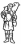

Cei Conferenza episcopale italiana
da pubblicazione allegata al n.671
di "Casabella" settembre 1999
|
 | Cei Conferenza episcopale italiana |
Progetti per la Chiesa di Santa Maria in Zivido di San Giuliano Milanese |
Favole Paolo |
Il territorio � segnato dalla presenza dei fontanili e dal tracciato viario storico di via Corridoni, strada in acciottolato, parallela alla via Romana, della quale la piccola chiesa esistente, che sarà utilizzata come cappella feriale, costituisce lo sfondo prospettico. L'area che circonda il nuovo complesso � molto vasta, quindi si � scelto di dividerla in due piazze. Quella esterna, pubblica, aperta, a pianta quadrata � delimitata da un pergolato lungo la via Gorki, da quinte murarie verso ovest, da un pergolato chiuso da vetrate verso il sagrato. All'angolo tra il pergolato e le quinte si trova il campanile isolato. La piazza interna-sagrato � invece chiusa, silenziosa e riservata alle funzioni religiose. Il lato ovest � delimitato da un muro con una gradonata per le funzioni all'aperto. A est sono la chiesa e gli edifici parrocchiali, in parte lambiti dall'acqua di un bacino rettangolare. A nord si trova la cappella feriale, il cui piccolo sagrato � disegnato in mattoni e pietra. La nuova chiesa � ad aula rettangolare, con una navata laterale di forma triangolare sul lato nord, elemento di raccordo fisico e visivo con la cappella feriale. L'ingresso occidentale � costituito da un atrio-vestibolo affiancato da due corpi parallelepipedi che ospitano il battistero a sud e i confessionali a nord e che costituiscono una sorta di Westwerk. Il presbiterio � contenuto in una struttura troncoconica, abside e transetto insieme, più alta della navata. La copertura � separata dalla parete da un anello di luce, a cui si aggiunge quella proveniente da una corona di piccole aperture in alto e da alcune finestre verticali alla base. La navata principale � illuminata da un taglio longitudinale in copertura verso sud e dalle aperture della navata laterale. Quindi, a un presbiterio molto chiaro corrisponde una navata meno luminosa. lo spazio per la celebrazione del sacramento della riconciliazione � illuminato solo da una vetrata verso il vestibolo e da piccole feritoie nelle pareti. Il battistero ha ampie finestre verso la vasca d'acqua, schermate da frangisole orrizzontali. |
indice progetti

sito di propriet� della Associazione
Culturale Zivido
webmaster@aczivido.net